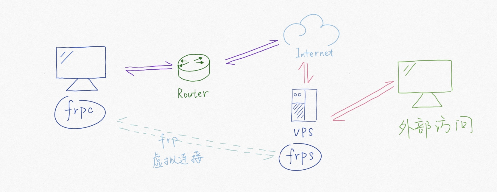

内网穿透 frp 配置¶
缘由¶
由于网络资源受限，部分服务器只有私网 IP ，没有公网 IP，即部分服务器无法被公网访问。但是有时我们需要通过公网对一些服务器进行访问，这样就出现了内网穿透。
工作原理¶
其本质是通过一台有公网 IP 的服务器，通过对应的协议和端口，和无公网服务器之间建立起一条虚拟隧道，达到让无公网 IP 的服务器也能被公网访问的目的。

配置¶
内网穿透有多个工具，具体参考：https://zhuanlan.zhihu.com/p/303175108 这里选择 frp 进行内网穿透，通过其工作原理可知，做内网穿透必须要有两台服务器：
具有公网 IP 的服务器（VPS），也叫服务端
无公网 IP 的服务器（目标服务器），称为客户端，即目标的主机
服务端配置¶
下载对应的 frp 压缩包¶
官网链接：https://github.com/fatedier/frp/releases/
mkdir ~/frps
cd ~/frps
wget https://github.com/fatedier/frp/releases/download/v0.37.1/frp_0.37.1_linux_amd64.tar.gz
解压压缩包¶
tar -zxf frp_0.37.1_linux_amd64.tar.gz
修改配置文件¶
cd frp_0.37.1_linux_amd64
vi frps.ini
frps.ini:
[common]
bind_port = 7000
dashboard_port = 7500
token = <the conenntion passwd>
dashboard_user = <web interface login username>
dashboard_pwd = <web user login password>
bind_port: 与客户端连接时的端口dashboard_port: 管理界面端口token: 与客户端连接时的密钥dashboard_user: 管理界面用户账号dashboard_pwd: 管理界面账号密码
启动服务¶
# 修改 frp_0.37.1_linux_amd64/systemd 中的 frps.service 文件
cd ~/frps/frp_0.37.1_linux_amd64/systemd
vi frps.service
sudo cp frps.service /usr/lib/systemd/system/
sudo systemctl daemon-reload
sudo systemctl start frps.service
sudo systemctl enable frps.service
frps.service:
[Unit]
Description=Frp Server Service
After=network.target
[Service]
Type=simple
User=nobody
Restart=on-failure
RestartSec=5s
ExecStart=/path/to/frps/frp_0.37.1_linux_amd64/frps \
-c /path/to/frps/frp_0.37.1_linux_amd64/frps.ini
LimitNOFILE=1048576
[Install]
WantedBy=multi-user.target
客户端配置¶
下载对应 frp 压缩包¶
官网下载链接: https://github.com/fatedier/frp/releases/
mkdir ~/frpc
cd ~/frpc
wget https://github.com/fatedier/frp/releases/download/v0.37.1/frp_0.37.1_linux_amd64.tar.gz
解压压缩包¶
cd ~/frpc
tar -zxf frp_0.37.1_linux_amd64.tar.gz
修改配置文件¶
cd ~/frpc/frp_0.37.1_linux_amd64
vi frpc.ini
frpc.ini:
[common]
server_addr = <public IP address>
server_port = 7000
token = <server token>
[192.168.1.14]
type = tcp
local_ip = 127.0.0.1
local_port = 22
remote_port = 56801
server_addr: 服务端 IP 地址server_port: 服务端端口，即服务端配置文件中的bind_porttoken: 服务端设置的密码，即服务端配置文件中的tokentype: 协议类型，tcp/udp/http/https/stcp/sudplocal_ip: 本地 IP 地址，即客户端 IPlocal_port: 本地端口，即需要从外网访问客户端的真实端口remote_port: 远程端口，即外网访问客户端时的端口
启动服务¶
# 修改 frp_0.37.1_linux_amd64/systemd 中的 frpc.service 文件
cd ~/frpc/frp_0.37.1_linux_amd64/systemd
vi frpc.service
sudo cp frpc.service /usr/lib/systemd/system/
sudo systemctl daemon-reload
sudo systemctl start frpc.service
sudo systemctl enable frpc.service
frpc.ini:
[Unit]
Description=Frp Client Service
After=network.target
[Service]
Type=simple
User=nobody
Restart=on-failure
RestartSec=5s
ExecStart=/path/to/frpc/frp_0.37.1_linux_amd64/frpc \
-c /path/to/frpc/frp_0.37.1_linux_amd64/frpc.ini
ExecReload=/path/to/frpc/frp_0.37.1_linux_amd64/frpc reload \
-c /path/to/frpc/frp_0.37.1_linux_amd64/frpc.ini
LimitNOFILE=1048576
[Install]
WantedBy=multi-user.target